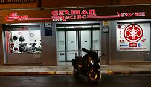
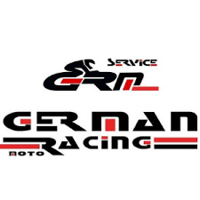
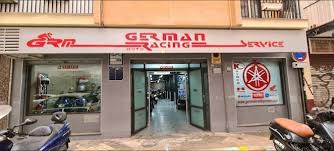

Nuestro Taller





Mantenimiento especializado en motocicletas Yamaha.
Diagnóstico profesional y reparación multimarca.
Motos nuevas y de segunda mano revisadas.
Repuestos originales y mantenimiento completo.



📍 Calle Ruiseñor 6, Granada
📞 958201268
📱 616617589
📧 german.yamahamotos@gmail.com
Llamar ahora